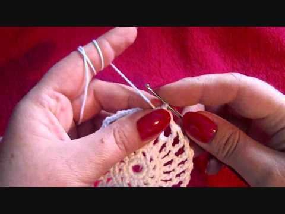
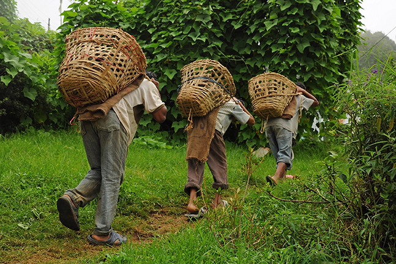

visualization is critical to data analysis. It provides a front line of attack, revealing intricate structure in data that cannot be absorbed in any other way. We discover unimagined effects, and we challenge imagined ones.
In Born a Crime, By turns alarming, sad and funny, this book provides a harrowing look, through the prism of Mr. Noah’s family, life in South Africa under apartheid and the country’s lurching entry into a postapartheid era in the 1990s. Some stories will be familiar to fans who have followed the author’s stand-up act. But his accounts here are less the polished anecdotes of a comedian underscoring the absurdities of life under apartheid, than raw, deeply personal reminiscences about being “half-white, half-black” in a country where his birth “violated any number of laws, statutes and regulations. Though He was mistreated in the white land area, it did not stop him to live a happy life with his family and also stay foccussed with his carrer. This really shows that it is very important to suffer in life because the chanllages that you face helps you to grow mature and also learn how to overcome all the challages and also remain postive on what your are doing, forexamples me as a student, I am facing different challanges but if I try to think about what Noah passed through, I feel comfortable and have hope that one day one time I will overcome all what I am passing trough and achieve what I want.
In Man's search for meaning,we see Viktor Frankl chronicling his experiences as a prisoner in Nazi concentration camps during World War II, and describing his psychotherapeutic method, which involved identifying a purpose in life to feel positive about, and then immersively imagining that outcome, we should not not be over stressed about what we are facing in this life,let us remain positive in every situation we are in.by experiencing something or encountering someone; and by the attitude we take toward unavoidable suffering" and that "everything can be taken from a man but one thing: the last of the man. we have to be patient in everything because no situation is permanet.
Patriarchy, this social system in which men holds primary power and predominate in roles of political leadership, moral authority, social privilege and control of property. Some patriarchal societies are also patrilineal, meaning that property and title are inherited by the male lineage is not fair at all because me as a woman I have to make sure that I can be equal with the man, the mentality of saying that a man is supposed to be powerfull than a woman is not a must and as I am studying, I want to make sure that I can inspire my fellow women to fight for our rights in both government and families.
Things people can do in this time of Corona

This situation has disapointed many people more especailly students, and this has affected the girls on a larger extent, due to the fact that most of the girls are at home doing nothing, some have ended up becominng pregnant at an early age hence giving birth. So for the young people, they are supposed to make themselves busy in this time so that they can not be attracted to bad things that can destroy their lives.
They can do practical skills
making clothes like crochets
weaving baskets
plainting hair
cooking
Drawing
Reading story books
enganging theselves in farming skills
Plan a daily routine
Buju Banton's Statement
when you rent a house you cannot change the structure to fit your needs. Meaning you are forced to work with the structure and if you don’t want, you leave. This simply means that If you rent an apartment, understand the basics of landlord-tenant law. When you own a home, your legal rights are evident in a lot of ways If things are so bad that you cannot safely live in the apartment, you may have to leave and work with dozens of companies to help find the policy that fits your needs.
This is same as to me as a student, since I have all the reqiurements like Education, laptop, wifi, shelter, food, water so I have to be comfortable, happy and content with everything I have been given.
Western culture, sometimes equated with Western civilization, Western lifestyle or European civilization, is a term used very broadly to refer to a heritage of social norms, ethical values, traditional customs, belief systems, political systems, and specific artifacts and technologies that have some origin.
Western culture in developed countries shows when you look at the infrastructure and society as a whole in those countries. Western culture influences our behavior, the way we speak, the way we dress, and the way we do things in particular. Everything is organized in a specific way from Western culture
The legacy of colonialism reproduced a political and economic straitjacket for the newly independent nations from the beginning. Competing economic ideologies of the postindependence societies battled over whether development would proceed along free-market or state-directed lines.
Two structures that are progressive structures
Education
colonisation and western civilisation led to the introduction of education in the EastAfrican countries, before the western civilisation and colonisation all of the people were illetrate and this system has really improved on our standards of literacy trough speaking English languages and also knowing how to read and write, So due to the fact that western civilisation and all the habbits being introduced in our black continiet, it has made people to change their ways of conduct leading to the extend of not being contented with the little skills you have, here by I can say most of the people are not satisified with our education instead they now prefer outside education.
Technology
colonisation and western civilisation led to the introduction of technologies, Technology has evolved and shaped our workplaces in many ways, through the adoption of tools like the internet and email for communications, word processing, spreadsheets and presentations for office productivity, electronic databases for record keeping, and robots and artificial intelligence for automation and it has reaaly improved on our education more espcailly student who are taking information technology, it is easy for them to conduct their classes even in this hard time of Corona, studies contine and that is why I have to be gratefull for what I have and the my education.
Two structures that are not progressive

It has minimized ethical and moral values
How one's moral values affect one's sense of ethics? Our moral values identify what is right or wrong for the individual. We will react differently to various ethical situations depending on what we believe to be right or wrong. This is also a matter of ethics, since an illegal act is also unethical. people have failed to make right decisons and also conducting themselves in a good way hence failed to respect other. people nolonger value behaviours and self because of ethics.
Poverty
This is the state of being inferior in quality or insufficient in amount. due to the introduction of the western civilisation and the colonisation of the black, this has brought a gap between the poor and the rich, this comes from education and poor courses than students are offerring, this means that uneducated people will always remain poor because if you are unemployed, that means the range of your income is very low making hence people to become poor, and also reaching to and extent of admireing other well developed people without being content with what they have.